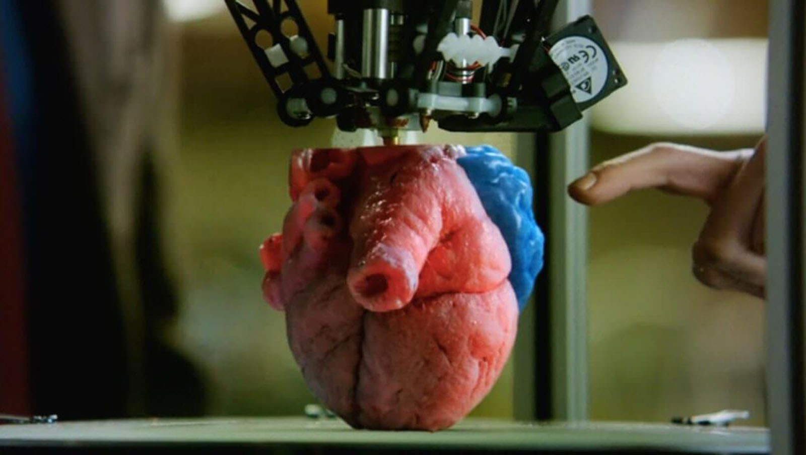

Técnica utilizada para la fabricación |
|
En la fabricación de corazones artificiales mediante impresión 3D, se utiliza un modelo digital del corazón obtenido mediante técnicas de escaneo o resonancia magnética. Una vez que se tiene el modelo digital, se utiliza una impresora 3D para crear el corazón en capas, utilizando materiales como plástico o metal. Esta técnica permite crear corazones a medida y personalizados para cada paciente, lo que puede mejorar la eficacia del tratamiento y reducir los riesgos asociados a la cirugía. |
 |